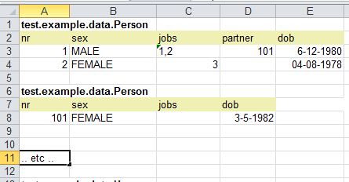

Welcome to junit-xlsdata-loader
This is a library that makes it very easy to populate your (deeply nested) objects from an Excel .xlsx file dynamically. You start with a (temporary) jUnit test to generate an Excel template with a number objects that want populate later on. For example:
XlsDataWriter.writeXlsxFile("example.xls",
Person.class, Person.class, House.class, Job.class, MortgageProductType.class, TestCase.class );You, or better an analist ot tester, can than fill in the Excel with testdata, like this:
And finally you can populate your testclasses like this:
Xlsx xls = new Xlsx(FILENAME);
Person testPerson = (Person) xls.make(Person.class, sheetNr, nr);
Features
All regular Java beans can populated. The class may contain collections, arrays and relations (1:1 1/M M/M) with other objects. All primitives and common objects like Date(Time), BigDecimal are supported. You can provide your own mappers to convert a String inside the excel file to your particular object.The generated Excel file only has one sheet and all objects start in the first column, but you can as many sheets as needed, and rearrange the cells any you want. Columns that correspond with unimportant properties can be removed and columns can be rearranged, the only requirement is that the key column ("nr") is the left most column. There can be several blocks with same classname in a worksheet, but all key values (under 'nr' ) should be unique with a worksheet for each classname. Empty cell are consider null values.
Excel values
All values are considered String and formatters will try to convert this value to the corresponding property type. All numeric values should use the . as the decimal delimiter. By default the following date formats are used: "dd-MM-yyyy hh:mm:ss" (plus a number of variations of these). You can override these with your own set of date formats.Note: Be aware that while working inside an Excel file the editor tries to be clever and automatically changes the cell format, this may lead to a different format than the supported one. It is best to select all cells, right-click and cell format to text.
All property values (except primitives), can refer to other object(s). For a 1:1 relation the value should be the nr of the corresponding type. For collections a comma separated list of nr's can be used. (see image above)
Api
The api is small and easy, by examing the examples under the test folder, one should be able to quickly setup his/her own project.A fully worked out example is here: example and the corresponding excel file is here: excel file
More documentation can be found here: documentation